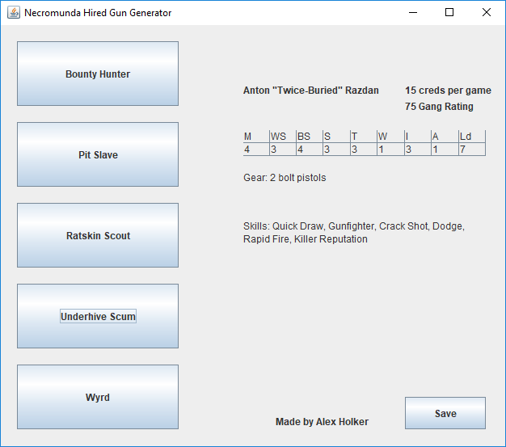

Utilities for Necromunda
Random Hired Gun Generator
I wrote this Java program in 2014 to make it easier to create a pool of hired guns for a narrative campaign.
Running the JAR file and selecting a hired gun type will automatically select weapons, skills and a name for a new Hired Gun of the chosen type. The result can also be exported to a text file.